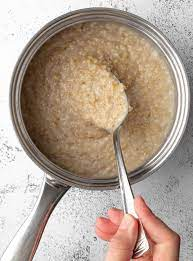

Oatmeal

A hearty bowl of oatmeal that will give you the necessary carbs to start your day!
You can add any type of fruit to enhance the flavor.
- Rolled Oats
- Water
- Heat Source
- Pour the oats into a bowl.
- Add a copious amount of water to the oats, it should look like a watery soup.
- Cover the bowl with a paper towel, and place it in the microwave for two minutes.
- The oats should now be ready for consumption.